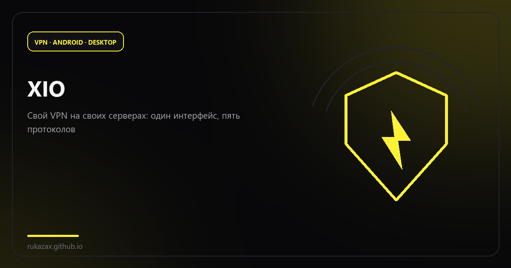
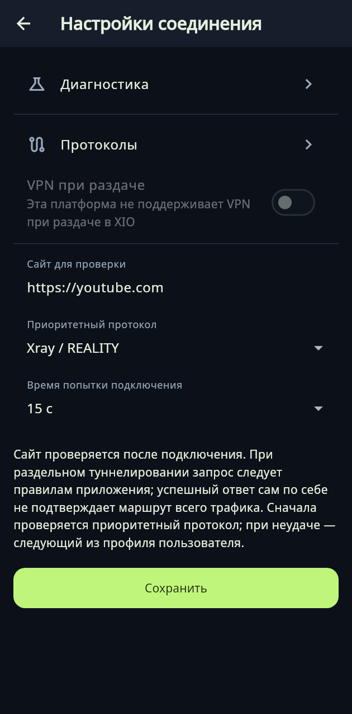
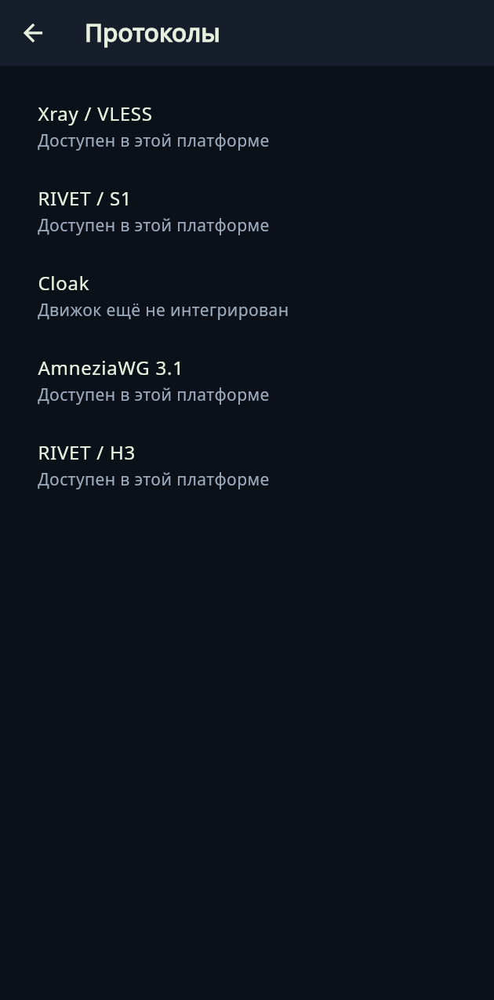

XIO: VPN, который живёт на вашем сервере
Свой VPS, свои пользователи, пять протоколов и один интерфейс на Android, Ubuntu и Windows.
Большинство VPN-приложений устроены одинаково: чужой сервер, подписка, закрытые протоколы и доверие к оператору «на слово». XIO переворачивает схему: у вас есть свой VPS, приложение ставит на него сервер по SSH, а клиент на телефоне или компьютере просто подключается к вашему же серверу. Название расшифровывается как X in 1 out — много протоколов внутрь, один интерфейс наружу.
Что умеет
- ставить и обслуживать VPN-сервер на VPS по SSH, управлять пользователями, отзывать и экспортировать доступ;
- автоматически определять формат сторонних конфигураций при импорте;
- держать приоритет протоколов, таймаут попытки и HTTPS-проверку после подключения (по умолчанию
youtube.com); - собирать мультипротокольные профили пользователя и делегировать администрирование с лимитами активных пользователей;
- на Android — раздельное туннелирование, системная тема, выбор иконки, плитка в быстрых настройках и 13 языков;
- на рутованном Android — раздача VPN-соединения; на Windows — экспериментальная интеграция с ICS.
Протоколы
Ядро приложения умеет несколько транспортов, и это не «список для галочки»: у каждого свой сценарий.
| Протокол | Зачем нужен |
|---|---|
| Xray / REALITY | основной рабочий вариант с маскировкой под чужой TLS-сайт |
| RIVET / S1 и RIVET / H3 | экспериментальный собственный транспорт (TCP и HTTP/3) |
| AWG | AmneziaWG — WireGuard с обфускацией |
| Cloak | обёртка трафика под браузерный TLS |
Раздел Настройки → Соединение — это и есть вся «политика подключения»: сайт для проверки, приоритетный протокол, время попытки.
| Настройки соединения | Протоколы |
|---|---|
 |  |
Логика простая: если приоритетный протокол не поднялся за отведённое время, клиент пробует следующий из профиля пользователя. Никаких ручных переключений в три часа ночи.
Платформы
| Платформа | Состояние |
|---|---|
| Android 8+ | APK для ARM64, ARMv7, x86_64; ARM64 физически проверен на POCO X6 5G |
| Ubuntu x64 | DEB и портативный архив, системные тесты на Ubuntu 24.04 |
| Windows 10/11 x64 | тестовый ZIP: интерфейс проверен в Wine, нативный драйвер и ICS ждут теста на Windows |
| iPhone / iPad | исходный проект Xcode, подписанного IPA нет — валидация Apple впереди |
Авторы не притворяются, что всё готово: статусы в таблице — это честная карта зрелости, а не маркетинг.
Чего VPN не обещает
Этот раздел стоит прочитать до покупки VPS. Даже с TLS провайдер видит входной IP. Строгий allowlist требует доступного ingress: переименовать сайт в конфиге и «пробить» заблокированный сервер нельзя. Сборка не тестировалась на сетях российских операторов, а RIVET — экспериментальный протокол без независимого аудита и без доказанной неотличимости от браузера.
Иными словами, XIO — это инструмент для тех, кто готов администрировать свой сервер и понимать ограничения, а не «кнопка, которая всё решает».
Лицензия и поддержка
Собственный код — GPL-3.0-only, сторонние зависимости сохраняют свои лицензии (полные тексты лежат в репозитории). Проект развивает Константин Ерёмин; поддержать можно на x1o.org/pay.
- Страница продукта · Исходники и релизы
- Сборки и загрузки — APK, DEB, ZIP и исходники
Кому подойдёт
Тем, у кого есть свой VPS и кто хочет управлять доступом сам: выдавать и отзывать пользователей, экспортировать конфиги, не зависеть от чужой подписки. Тем, кому нужен один клиент на Android, Ubuntu и Windows. И тем, кто ценит открытый код: приложение можно собрать и проверить, а не доверять закрытому бинарнику.